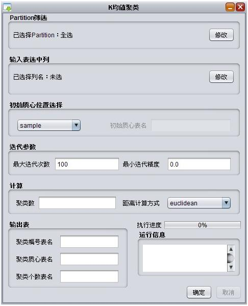
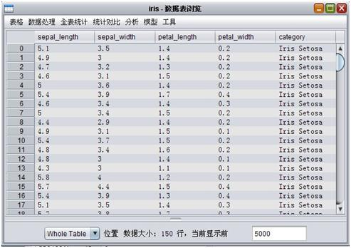
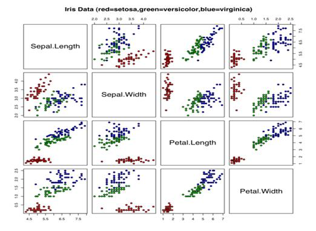
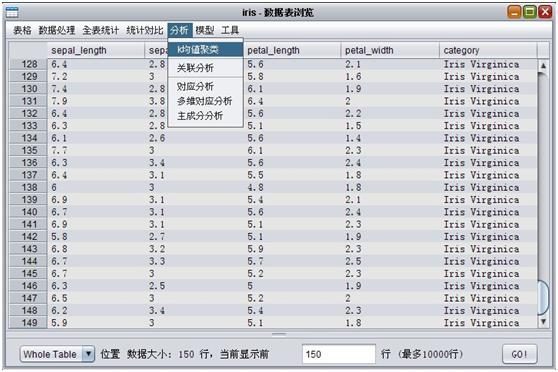
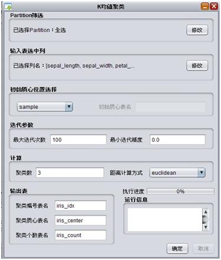
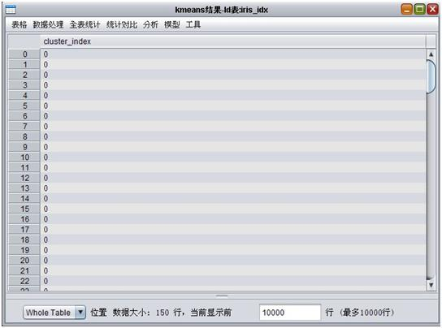
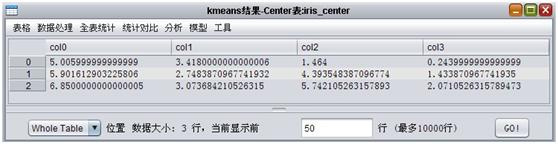
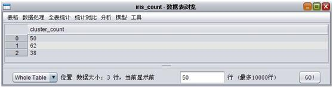

聚类(Clustering)，简单地说就是把相似的东西分到一组，同分类(Classification)不同，对于一个classifier ，通常需要你告诉它”这个东西被分为某某类”这样一些例子，理想情况下，一个classifier会从它得到的训练集中进行”学习”，从而具备对未知数据进行分类的能力，这种提供训练数据的过程通常叫做监督学习(supervised learning)，而在聚类的时候，我们并不关心某一类是什么，我们需要实现的目标只是把相似的东西聚到一起，因此，一个聚类算法通常只需要知道如何计算相似度就可以开始工作了，因此clustering通常并不需要使用训练数据进行学习，这在机器学习中被称作无监督学习(unsupervised learning)。
K均值聚类是一种得到最广泛使用的聚类算法，把n个对象分为k个簇，使簇内具有较高的相似度。相似度的计算根据一个簇中对象的平均值来进行。它与处理混合正态分布的最大期望算法很相似，因为他们都试图找到数据中自然聚类的中心。
算法首先随机地选择k个对象，每个对象初始地代表了一个簇的平均值或中心。对剩余的每个对象根据其与各个簇中心的距离，将它赋给最近的簇，然后重新计算每个簇的平均值。这个过程不断重复，直到准则函数收敛。
它假设对象属性来自于空间向量，并且目标是使各个群组内部的均方误差总和最小。KMeans的更多详细介绍请参考 相关文档链接
执行help(Cluster.kmeans)可以查看帮助信息
def kmeans(
inputTableName,centerCount,
idxTableName, centerTableName, clusterCountTableName,
selectedColNames = None, selectedPartitions = None,
loop = 100, accuracy = 0.0, distanceType = 'euclidean',
initCenterTableName = None, initCentersMethod = 'sample')
示例:
Cluster.kmeans("kmeans_input", 4, "idxTable","centerTable","clusterCountTable",loop=100)
KMeans界面参数如下图：
其中:
- 最上层为选择输入表的partition；
- 下方输入表选中列为选择参与KMeans计算的特征列，对应脚本参数selectedColNames，目前只支持double类型的特征列；
- 初始质心位置选择模块分别对应脚本参数initCentersMethod和initCenterTableName
- 迭代参数对应脚本loop和accuracy；
- 计算模块中聚类数对应脚本参数centerCount；
- 距离计算方式对应脚本参数distanceType；
- 聚类编号表名，质心表名，个数表名分别对应脚本参数dxTableName, centerTableName, clusterCountTableName；
- 参数填写完毕后点击确定可以执行。执行结束后界面会一次弹出三张输出表。
这里我们采用了iris数据集( Iris flower data set )进行实例，数据如下：
Iris以鸢尾花的特征作为数据来源，数据集包含150个数据集，分为3类，每类50个数据，每个数据包含4个属性，该数据集数据分布情况如下，可以看到在二维关系下，setosa较为独立，versicolor, virginica中间有部分交杂情况。
首先在界面上选中k均值聚类：
显示参数窗口，并按照上文说明填写对应参数：
这里我们设置了最大迭代100次，最小精度为0，聚类数为3(由于原表category列为类别，可以对比下我们的聚类结果和原表值)，点击右下角执行开始计算。结果聚类编号表为：
其中的0,1,2为分类标识
聚类质心表为：
每行对应一个分类的质心位置。
聚类个数表为：
分别对应每个聚类中的个数。
对于setosa类别，KMeans得到较好的聚类结果，versicolor, virginica两个类别中出现交杂情况，结果符合数据实际情况，提高聚类迭代次数和更好的选择初始点选择可以提升运行结果。 三张数据表在xlab中是有序的，可以通过AppendColumn函数对结果进行贴合。